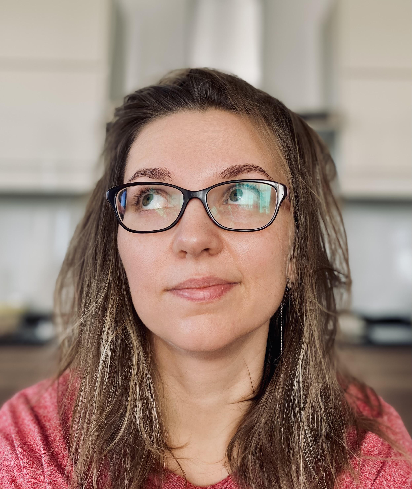

Контактыг. Санкт-Петербург +7 921 987 25 27 irina.danilenko@gmail.com @irina_loginova |
Ирина ЛогиноваElbrus bootcamp bear 2022 Обо мнеПривет, меня зовут Ира. Живу в Санкт-Петербурге. У меня есть муж и двое детей. У нас есть дом, зеленый газон, виноград на террасе, розы и немного огорода. В прошлом я юрист, работала менеджеров в коммерческой недвижимости. Последние 8 лет занималась детьми. Теперь пришло время заняться своими желаниями. ХоббиЯ люблю путешествовать, открывать новые места. Люблю активности: кататься на лыжах и велосипеде, заниматься дайвингом. Ездить с семьей и друзьями на Ладогу отдыхать в палатках и кататься на байдарке. Люблю вязать. Обожаю ездить на машине. Читаю книги и смотрю Marvel. Интересное
|